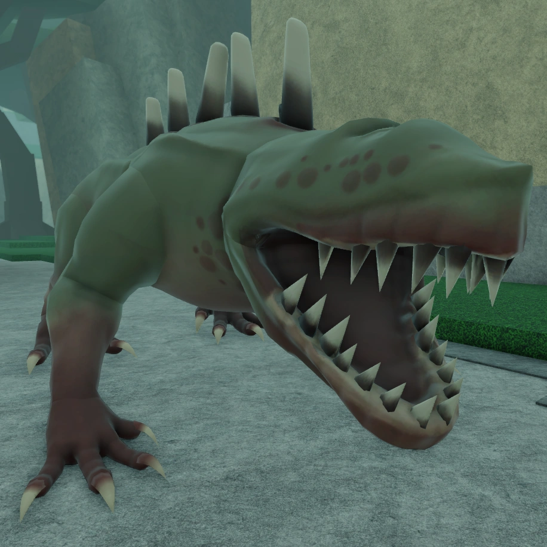

Aqui estão alguns elementos gerais das mecânicas de inimigos no jogo:
- Padrões de Ataque e Animações:
Cada inimigo possui um conjunto de ataques específicos e animações que indicam seus movimentos. Por exemplo, um inimigo pode levantar o braço antes de um golpe ou preparar um ataque carregado. Aprender a "ler" essas animações é essencial, pois ajuda o jogador a prever o próximo ataque e reagir de forma adequada. A maioria dos inimigos tem ataques que podem ser bloqueados, desviados ou interrompidos, e alguns ataques mais poderosos exigem o uso do "parry" (aparar) ou esquiva.
Dano em Área (AoE):
Muitos inimigos, especialmente os de maior porte, têm ataques em área que podem afetar uma zona ao redor deles. Esses ataques são projetados para impedir que os jogadores fiquem muito próximos por muito tempo. Para evitar ataques em área, o jogador deve prestar atenção ao alcance dos inimigos e se afastar no momento certo.
- Quebra de Defesa:
Alguns inimigos têm ataques que podem quebrar a defesa do jogador, mesmo quando bloqueados, causando um "stagger" (atordoamento) ou empurrando o jogador para trás. Jogadores precisam estar atentos a esses ataques e devem evitá-los ou desviar em vez de bloquear. Essa mecânica impede que o jogador dependa exclusivamente da defesa.
- Combate em Grupo:
Muitos inimigos atacam em grupos, especialmente os inimigos menores ou humanoides, como os bandidos. Grupos de inimigos podem cercar o jogador, o que torna o combate mais desafiador. Para lidar com isso, o jogador pode usar ataques de área ou eliminar os inimigos mais fracos primeiro para diminuir o número de ameaças.
- Níveis de Resistência e Vida
Os inimigos variam muito em resistência e saúde. Inimigos maiores, como Golems ou o Primadon, possuem alta defesa e saúde, o que faz com que o combate seja mais longo e exija que o jogador seja consistente e estratégico.
Alguns inimigos têm fraquezas específicas, como vulnerabilidades a certos tipos de dano (ex. físico, mágico), o que pode ser explorado pelos jogadores para derrotá-los mais rapidamente.
- Evasão e Contra-Ataque:
Muitos inimigos têm movimentos de evasão que fazem com que eles se afastem do jogador após um ataque, ou então têm habilidades que reagem a ações do jogador, como contra-atacar. A mecânica de contra-ataque dos inimigos desafia os jogadores a serem cuidadosos com seus próprios ataques e a aprender os momentos certos para atacar.
- Escala de Dificuldade por Região e Tipo:
Em Deepwoken, diferentes áreas têm inimigos com escalas de dificuldade variadas. As regiões mais avançadas terão inimigos mais poderosos e agressivos. Isso permite que jogadores iniciantes enfrentem inimigos mais fracos em áreas seguras e só progridam para regiões mais perigosas quando estiverem prontos.
- Habilidades Especiais e Elementais:
Alguns inimigos têm habilidades elementais (como fogo, gelo ou eletricidade), que causam efeitos de status no jogador, como queimadura ou congelamento. Isso adiciona outra camada de dificuldade, pois o jogador deve evitar ser atingido por esses ataques ou ter habilidades defensivas contra o elemento. Esses efeitos de status podem drenar a saúde ou energia do jogador ao longo do tempo, e lidar com esses inimigos exige que o jogador esteja preparado para neutralizar ou evitar esses ataques.
- Chefes e Mini-Chefes:
Chefes e mini-chefes possuem mecânicas únicas e uma combinação de habilidades que desafiam até os jogadores mais experientes. Eles frequentemente têm várias fases, onde seus padrões de ataque ou habilidades mudam à medida que perdem saúde, tornando o combate progressivamente mais difícil. Em muitos casos, os chefes exigem que os jogadores usem o ambiente ao seu favor ou que cooperem com outros jogadores para serem derrotados.
- Recompensas e Loot:
Inimigos mais fortes e chefes geralmente fornecem loot e recompensas melhores. Isso incentiva os jogadores a enfrentarem desafios maiores em busca de itens ou habilidades raras. Além disso, os inimigos podem dropar itens específicos que o jogador pode usar para melhorar seu personagem ou desbloquear habilidades especiais. Essas mecânicas tornam Deepwoken um jogo desafiador, onde cada inimigo apresenta um novo obstáculo e exige que os jogadores usem diferentes táticas para sobreviver. O jogo recompensa a habilidade, o tempo de reação e o conhecimento dos jogadores sobre as mecânicas de combate, criando uma experiência intensa e estratégica em cada encontro.
Os principais inimigos que você provavelmente encontrará na sua jornada serão:
Megalodaunt (Sharko):

Megalodaunt é um monstro gigante com forma de tubarão humanoide, encontrado comumente em Erisia, em barcos queimados no Mar Aratel, e nas Profundezas.
"Embora não pareçam criaturas particularmente inteligentes, eles possuem um forte senso de hierarquia social e sabem seu lugar em sua 'sociedade', se é que se pode chamar assim."
— Diário do Arquivista: Megalodaunt
Os Megalodaunts são conhecidos por seu comportamento social, evidenciado pelo fato de que um Megalodaunt pode se tornar um Alfa dentro de seu grupo, embora seja mais comum vê-los sozinhos do que em grupos. Eles são criaturas bípedes, com pele pálida e um conjunto de corais nas costas, que parecem ser utilizados apenas para fins ofensivos. Documentados como carnívoros, possuem características condizentes com essa natureza, com duas fileiras de dentes afiados na boca, peles resistentes e garras impressionantes. Às vezes, eles são vistos devorando o corpo de um Soldado da Autoridade, confirmando sua natureza carnívora.
Normalmente encontrados na ilha de Erisia, os Megalodaunts são um dos primeiros monstros que a maioria dos novos jogadores encontra, juntamente com os Mudskippers. Jogadores que estão despreparados ou que não possuem conhecimento sobre este monstro tendem a ser derrotados em questão de segundos.
"Embora não pareçam criaturas particularmente inteligentes, eles possuem um forte senso de hierarquia social e sabem seu lugar em sua 'sociedade', se é que se pode chamar assim."
— Diário do Arquivista: Megalodaunt
Os Megalodaunts são conhecidos por seu comportamento social, evidenciado pelo fato de que um Megalodaunt pode se tornar um Alfa dentro de seu grupo, embora seja mais comum vê-los sozinhos do que em grupos. Eles são criaturas bípedes, com pele pálida e um conjunto de corais nas costas, que parecem ser utilizados apenas para fins ofensivos. Documentados como carnívoros, possuem características condizentes com essa natureza, com duas fileiras de dentes afiados na boca, peles resistentes e garras impressionantes. Às vezes, eles são vistos devorando o corpo de um Soldado da Autoridade, confirmando sua natureza carnívora.
Normalmente encontrados na ilha de Erisia, os Megalodaunts são um dos primeiros monstros que a maioria dos novos jogadores encontra, juntamente com os Mudskippers. Jogadores que estão despreparados ou que não possuem conhecimento sobre este monstro tendem a ser derrotados em questão de segundos.
Quando derrotados, deixam cair Pele de Megalodaunt e Modificadores de Mantra, com uma baixa chance de os modificadores de mantras de nível superior. Eles também podem deixar cair Obsidiana Umbral de maneira incomum e, raramente, um Coral de Megalodaunt ou um Casaco de Megalodaunt.
Além de serem encontrados vagando em diversos locais ou em cavernas específicas, os Megalodaunts podem ser atraídos com o uso de uma Isca de Megalodaunt.
Thresher:

Os Threshers são crocodilianos hostis que surgem no Vale das Estrelas e nas Profundezas.
Eles podem ser encontrados frequentemente como ameaças individuais ou em duplas com outro Thresher e, mais raramente, acompanhados do Rei Thresher, formando uma família de Threshers.
Seu principal item de saque é a Espinha de Thresher, que pode ser usada para criar armaduras. Geralmente, há um baú de recompensa após derrotar esse monstro.
Eles podem ser encontrados frequentemente como ameaças individuais ou em duplas com outro Thresher e, mais raramente, acompanhados do Rei Thresher, formando uma família de Threshers.
Seu principal item de saque é a Espinha de Thresher, que pode ser usada para criar armaduras. Geralmente, há um baú de recompensa após derrotar esse monstro.
Terrapod:
O Terrapod é um monstro notório por ter tempos de parry e animações de ataque estranhos, com alta mobilidade durante os ataques e uma capacidade de destruir saúde rapidamente se você não tomar cuidado.
Os Terrapods são criaturas roxas parecidas com caranguejos, com quatro patas, cada uma terminando em garras afiadas. Eles possuem uma carapaça dura coberta de espinhos, com uma boca na parte inferior para devorar suas vítimas. O material que forma sua carapaça e garras é de um tom de roxo bem mais escuro do que sua carne. Ele usa suas garras para cortar rapidamente os inimigos e pressionar qualquer um que esteja em seu caminho sem hesitação, e pode ser distinguido de outros monstros à distância apenas pelos sons altos de corte que faz a cada ataque. Considerando tudo, os Terrapods são bastante sem inteligência, pois seguem o mesmo padrão e repetem os mesmos ataques. Não se deixe pegar de surpresa, no entanto, pois seus ataques podem destruir sua saúde muito rapidamente.
Os Terrapods são criaturas roxas parecidas com caranguejos, com quatro patas, cada uma terminando em garras afiadas. Eles possuem uma carapaça dura coberta de espinhos, com uma boca na parte inferior para devorar suas vítimas. O material que forma sua carapaça e garras é de um tom de roxo bem mais escuro do que sua carne. Ele usa suas garras para cortar rapidamente os inimigos e pressionar qualquer um que esteja em seu caminho sem hesitação, e pode ser distinguido de outros monstros à distância apenas pelos sons altos de corte que faz a cada ataque. Considerando tudo, os Terrapods são bastante sem inteligência, pois seguem o mesmo padrão e repetem os mesmos ataques. Não se deixe pegar de surpresa, no entanto, pois seus ataques podem destruir sua saúde muito rapidamente.
“ Ah sim... Eu sei bem quais. Peguei um desses monstros outro dia. A coisa maldita ficava cortando minha linha, então troquei por uma de metal. Peguei isso com uma sereia, foi. Funcionou direitinho. Carne não fica boa com o roxo, porém.”
Mortus, sobre o Terrapod
Deep Owl (Coruja das Profundezas):
A Coruja das Profundezas (também chamada simplesmente de "Coruja") é um monstro relativamente raro encontrado em Alta Erisia, Lordsgrove e As Profundezas. Jogadores também relataram encontrar Corujas no Refúgio do Caminhante, Templo da Chama Esquecida e Mandíbulas da Víbora em Baixa Erisia. As Corujas estão relacionadas ao Juramento dos Modeladores de Visões e à magia das ilusões.
As Corujas das Profundezas só irão aparecer no Luminante Etreano enquanto a lua estiver visível, mas essa restrição não se aplica às Profundezas, nem à Coruja das Profundezas em Lordsgrove.
“Nós, corujas, achamos que o homem é capaz de... Pensamento suficientemente sofisticado. O suficiente para agradar ao nosso paladar.”
A Mente do Ninho
Todas as Corujas fazem parte de uma mente coletiva chamada A Mente do Ninho. Falar com ela nos dá uma visão única sobre o que esses predadores de outro mundo são.
As Corujas das Profundezas só irão aparecer no Luminante Etreano enquanto a lua estiver visível, mas essa restrição não se aplica às Profundezas, nem à Coruja das Profundezas em Lordsgrove.
“Nós, corujas, achamos que o homem é capaz de... Pensamento suficientemente sofisticado. O suficiente para agradar ao nosso paladar.”
A Mente do Ninho
Todas as Corujas fazem parte de uma mente coletiva chamada A Mente do Ninho. Falar com ela nos dá uma visão única sobre o que esses predadores de outro mundo são.
Diz-se que, em um ponto de suas vidas, os Modeladores de Visões tentam se tornar uma coruja, o que sugere que algumas, mas não todas, as corujas que aparecem em Deepwoken podem ser antigos Modeladores de Visões que se transformaram em corujas por meios desconhecidos.
Quando aparecem em Alta Erisia ou As Profundezas, sua presença é sinalizada por uma pequena nuvem de penas negras que caem suavemente ao redor de uma área. Ao entrar nas penas, a Coruja das Profundezas cairá imediatamente do céu e iniciará um diálogo com o jogador. Durante o diálogo, ela não será hostil e não iniciará um estado de combate. Portanto, é um bom momento para sair do jogo caso não esteja preparado para a batalha. Após o fim do diálogo, a coruja não atacará a menos que seja atingida primeiro ou se o jogador virar as costas. (As corujas também atacarão se já tiverem sido invocadas e o jogador entrar em seu alcance de detecção.) Assim como escapar de animais selvagens perigosos, como leões ou ursos, na vida real, se o jogador mantiver contato visual com a coruja e caminhar para trás, ela não atacará e eventualmente desistirá quando estiver fora de seu alcance de detecção.
Enforcer (Executor):
O Executor é um Mini-Chefe das Profundezas que atua como a penúltima provação dos Desafios das Profundezas, sendo um teste difícil para qualquer um que não esteja familiarizado. Diz-se que o Executor é apenas "uma construção destrutiva, feita para matar aqueles que tentaram escapar das Profundezas", mas suas origens são mais complexas; de acordo com a descrição das armas do Executor, os Executores são as almas das pessoas que falharam em seu próprio Desafio das Profundezas e foram transformadas (presumivelmente pelas Vozes da Catedral) para serem usadas como obstáculos na provação dos jogadores.
O Executor com Machado é o tipo principal, mas também existem as variantes com Martelo e com Espada do Executor. As únicas diferenças significativas entre eles são pequenas variações no tamanho, vida, dano e dano de postura. Fora isso, eles agem de maneira idêntica aos Executores normais.
O Executor com Machado é o tipo principal, mas também existem as variantes com Martelo e com Espada do Executor. As únicas diferenças significativas entre eles são pequenas variações no tamanho, vida, dano e dano de postura. Fora isso, eles agem de maneira idêntica aos Executores normais.
— Descrição do Machado do Executor
Nautilodaunt(Squibbo):
Nautilodaunt é um monstro bípede encontrado nas Profundezas. Ele aparece exclusivamente durante o evento Colapso das Profundezas, ao aceitar a missão Extermínio de Nautilodaunt ou no mercado da Cidade dos Afogados (exceto no modo Inferno), onde fica remexendo em algumas mercadorias. Também pode surgir em um evento raro, quando três grandes pedregulhos caem do teto das Profundezas. Ao ser derrotado, ele deixa cair um Tentáculo Estranho ou, em casos bem raros, um Pathfinder Elite. O Nautilodaunt também pode surgir de Baús Mímicos ao serem abertos, embora isso seja extremamente raro. Ele aparecerá com penas e fumaça saindo do baú e atacará o jogador.
Enquanto um Nautilodaunt está vasculhando o mercado, ele faz ruídos distintos, tornando-o especialmente fácil de detectar e evitar. No entanto, se ele já não estiver remexendo o mercado, o ruído cessará e ele permanecerá em silêncio até que outro jogador se aproxime e seja detectado.
"Eles não têm apreço por carne humana, preferindo, em vez disso, experimentar com os caídos, inserindo parasitas em suas vítimas."
— Descrição do Tentáculo Estranho
Não há registros de pesquisas realizadas sobre os Nautilodaunts, e suas origens e ciclo de vida são amplamente desconhecidos. No entanto, é observado que são criaturas altamente inteligentes, evidenciado por sua notável habilidade em combate e pela maneira excepcional com que aproveitam as funções motoras permitidas por sua anatomia.
Enquanto um Nautilodaunt está vasculhando o mercado, ele faz ruídos distintos, tornando-o especialmente fácil de detectar e evitar. No entanto, se ele já não estiver remexendo o mercado, o ruído cessará e ele permanecerá em silêncio até que outro jogador se aproxime e seja detectado.
"Eles não têm apreço por carne humana, preferindo, em vez disso, experimentar com os caídos, inserindo parasitas em suas vítimas."
— Descrição do Tentáculo Estranho
Não há registros de pesquisas realizadas sobre os Nautilodaunts, e suas origens e ciclo de vida são amplamente desconhecidos. No entanto, é observado que são criaturas altamente inteligentes, evidenciado por sua notável habilidade em combate e pela maneira excepcional com que aproveitam as funções motoras permitidas por sua anatomia.
Sua habilidade e força são até reconhecidas pelas Vozes das Profundezas, que os usam como armas secretas contra inimigos especialmente poderosos. Eles são verdadeiras ameaças, e derrotar um no mercado pode render uma reputação positiva com os Divers.
Cavaleiros de Pedra:
Cavaleiros de Pedra (também conhecidos como Cavaleiros do Deserto ou Cavaleiros da Areia) são um tipo de Monstro Gigante encontrado principalmente no Vale Varrido pelas Estrelas, seja sendo lançado no céu por um meteoro radiante ou simplesmente aparecendo lutando contra um Alpha Megalodaunt, mas eles também podem apenas aparecer aleatoriamente.
Reconhecíveis por seu corpo amarelo, olhos azuis e espada azul, os Cavaleiros de Pedra são a variante encontrada na Ilha Aratel. Eles não deixarão cair um baú se o Cavaleiro de Pedra emergir de um meteoro, ele só gerará um baú se o cavaleiro surgir sem um meteoro.
Reconhecíveis por seu corpo amarelo, olhos azuis e espada azul, os Cavaleiros de Pedra são a variante encontrada na Ilha Aratel. Eles não deixarão cair um baú se o Cavaleiro de Pedra emergir de um meteoro, ele só gerará um baú se o cavaleiro surgir sem um meteoro.
Golem de Pedra:
Golens de Pedra são construções de pedra grandes e volumosas com um núcleo branco brilhante distinto e três discos de pedra peculiares em seu "estômago" e "joelheiras". Seus corpos parecem fragmentados, mas permanecem intactos de qualquer maneira. Eles ganham vida pela ressonância única do Duque. Depois que o Duque encontrou a Forja do Pecado, os outrora protetores da ilha se voltaram contra seus habitantes, agora transformados em cascas estúpidas que não fazem nada além de atacar tudo o que vêem.
Golens de Pedra são encontrados apenas em Upper Erisia, comumente em Burning Stone Gardens, e também podem ser encontrados através dos seguintes eventos:
Golem de Pedra lutando contra um Megalodaunt (Alta Erisia)
Golem de Pedra encontrado na última onda da Invasão dos Bandidos (Igreja de Erisor)
Em combate, Golens de Pedra são muito resistentes, tendo saúde moderadamente alta e alta resistência a cortes. Apesar disso, os seus ataques são relativamente previsíveis e fáceis de punir, os seus ataques mais chamativos são os mais fáceis de explorar e os restantes são muito fáceis de evitar.
Golens de Pedra são encontrados apenas em Upper Erisia, comumente em Burning Stone Gardens, e também podem ser encontrados através dos seguintes eventos:
Golem de Pedra lutando contra um Megalodaunt (Alta Erisia)
Golem de Pedra encontrado na última onda da Invasão dos Bandidos (Igreja de Erisor)
Em combate, Golens de Pedra são muito resistentes, tendo saúde moderadamente alta e alta resistência a cortes. Apesar disso, os seus ataques são relativamente previsíveis e fáceis de punir, os seus ataques mais chamativos são os mais fáceis de explorar e os restantes são muito fáceis de evitar.